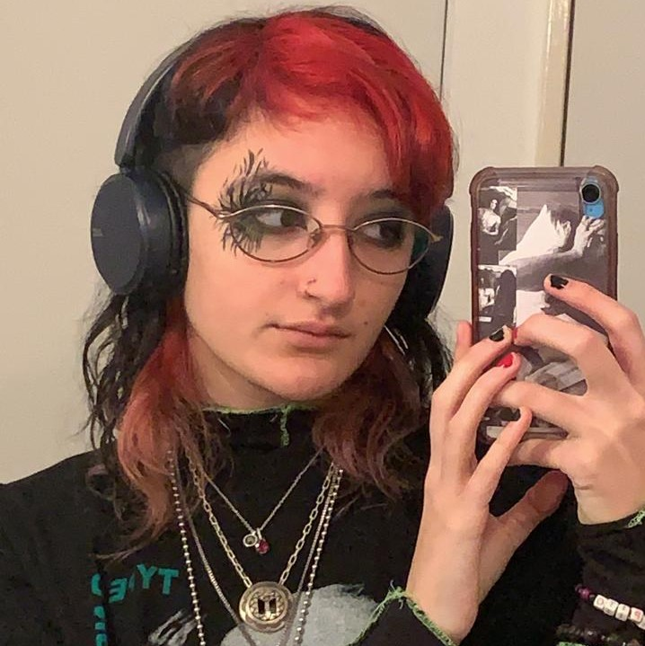

Cam Gauto
Menú
sobre mi :D
DATOS PERSONALES
Nombre completo:
Camila Gauto
Fecha de Nacimiento:
02/03/2002
Lugar de nacimiento:
Buenos Aires
FORMACIÓN ACADÉMICA
2021-:
Digital House
Certified Tech Developer
2020-2021:
Universidad de San Andrés
Licenciatura en Ciencias del Comportamiento
2017-2019:
Colegio Franco Argentino de Martínez
Bachiller con especialización en lenguas extranjeras
EXPERIENCIA LABORAL
no tengo experiencia laboral oops o.O